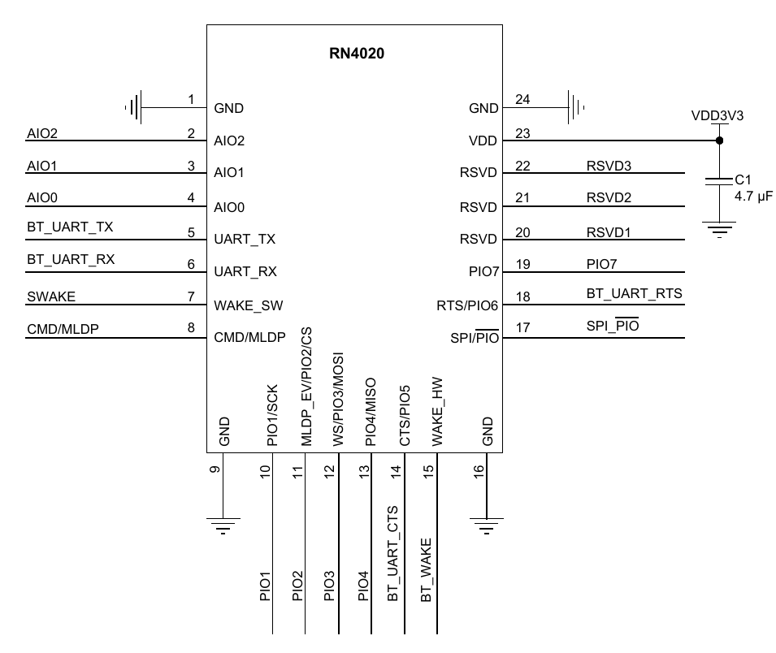

RN4020使い方ガイド
ピンアサイン
| ピン機能 | 接続(起動時) |
|---|---|
| WAKE_SW | HIGH |
| CMD/MLDP | LOW |
| WAKE_HW | HIGH |
| UART TX | RX |
| UART RX | TX |
基本コマンド
| コマンド | 説明 |
|---|---|
|
工場出荷時の既定値 |
|
完全工場出荷時の既定値 |
|
デバイスの名前を[名前]に変更 |
|
有効化/無効化する機能を設定 |
|
サービスを設定 |
|
UUIDを設定 |
|
プライベートキャラスタリック値を設定 |
|
デバイス情報を確認 |
|
再起動 |
|
BLEデバイスのUUIDとハンドル値の対応を確認(ペリフェラルのみ) |
|
ヘルプ |
セントラルコマンド
| コマンド | 説明 |
|---|---|
|
ペリフェラルデバイスを検索(Xで終了)
|
|
デバイスの検索を終了する |
|
[BTA](ボンディング済みMACアドレス)のペリフェラルBLEデバイスに接続 |
接続中コマンド
| コマンド | 説明 |
|---|---|
|
接続解除 |
|
通信強度 |
|
接続したBLEデバイスのUUIDとハンドル値の対応を確認(セントラルのみ) |
|
接続したBLEデバイスの[ハンドル値]に[転送データ]を送る(セントラルのみ) |
|
[ハンドル値]に送られてきたデータを読み出す(ペリフェラルのみ) |